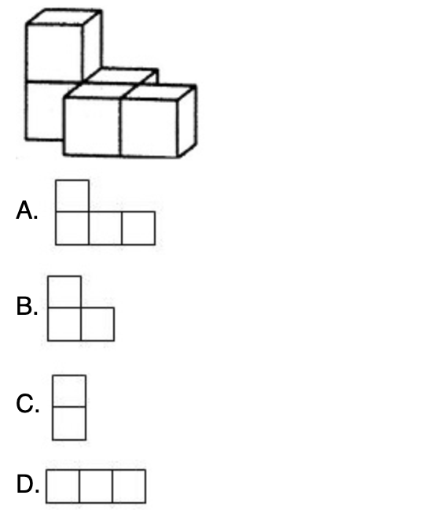
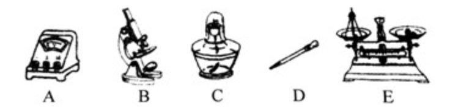
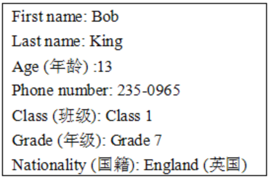

Looker


云教辅 > 题目列表页 > 导出为Word
1．在0，1，﹣ ，﹣1四个数中，最小的数是（ ）
A．0 B．1 C． D．﹣1
【答案】D.
【详解】解：∵﹣1＜﹣ ＜0＜1，
∴最小的数是﹣1，故选：D．
一、选择题
2．四个数－3，0，1，2，其中负数是（）
A.－3
B.0
C.1
D.2
【答案】D.
【详解】解：∵﹣1＜﹣ ＜0＜1，
∴最小的数是﹣1，故选：D．
3. 如图是由5个大小相同的小正方体组成的几何体，则从正面看该几何体得到的图形是（）
A.1.1
B.1.2
C.1.3
D.1.4
【答案】A.

4. 0既不是_____，也不是_____.
【答案】正数
【答案】负数
【详解】解：∵﹣1＜﹣ ＜0＜1，
∴最小的数是﹣1，故选：D．
二、填空题
5. 请写出下列仪器的名称。
A._____
B._____
C._____
D._____
E._____

【答案】电压表
【答案】显微镜
【答案】酒精灯
【答案】胶头滴管
【答案】天平
选择题导出时只需要关注答案和详解
填空题导出时，对于多个答案的，按照全部列出的方式展示 ；详解跟在最后面。
但是，填空题如果是导入，需要区分主观/客观和答题方式（键盘/手写/ABCD等）。此外，对于有作图的题目 ，还需要提醒老师去设置答题区图
简/解答题导出时，规则同填空题
6.综合性学习。
某校七年级（1）班开展“寻找冬天”的综合性学习活动，现请你参与。
（1）写出两个与冬天有关的四字词语。
（2）写出两组与冬天有关的诗句。
（3）写一段优美的语句，表达你对冬天的喜爱与赞美。要求用上恰当的修辞手法。
【答案】示例：寒冬腊月、岁暮天寒。
【答案】示例一：忽如一夜春风来，千树万树梨花开。示例二：墙角数枝梅，凌寒独自开。
【答案】示例：故乡的冬天，银装素裹，犹如素装的仙子婀娜多姿，妩媚诱人；故乡的冬天，是冰的世界，宛如水晶宫晶莹剔透，明镜如玉；故乡的冬天，是雪的世界，白精灵们尽展舞姿，沉醉其中。
【详解】故乡的冬天故乡的冬天故乡的冬天故乡的冬天故乡的冬天故乡的冬天故乡的冬天故乡的冬天故乡的冬天故乡的冬天故乡的冬天故乡的冬天故乡的冬天故乡的冬天故乡的冬天故乡的冬天故乡的冬天故乡的冬天故乡的冬天
三、简答/解答题
7. 任务型阅读
假设下面是你的个人信息, 请根据表格中的信息介绍一下自己。40词左右。
【答案】Hello! My name is Bob King. Bob is my first name and King is my last name. I am 13. I am from England. I am in Class 1,Grade 7. My telephone number is 235-0965.

四、阅读题
8.阅读理解
I am a 13-year-old (13岁的) boy from the USA. My name is Bob Smith. My telephone number is 127-3363 and my e-mail address is happybob@163. com. I am inChina with my father and mother now. Look at the photo. It’s a photo of my bedroom. My bedroom is very clean and tidy because I clean it every day. My computer is on the desk. I play computer games on Sunday. My soccer ball (足球) is under the table. My keys are in the drawer (抽屉). Where is my notebook? Can you find it? Oh! It's on the desk, too.
【题干】
Where is Bob from?
A. China.
B. America.
C. England.
D. Japan.
【答案】B.
【详解】故乡 my father and mother now
【题干】
Where is Bob from?
A. China.
B. America.
C. England.
D. Japan.
【答案】B.
【详解】故乡 my father and mother now
9. 鲁人好钓
鲁人有好钓者，以桂为饵，锻黄金之钩，错以银碧，垂翡翠之纶，其持竿处位即是，然其得鱼不几矣。故曰：“钓之务不在芳饰事之急不在辩言。”
【题干】
解释下列句子中加粗字的意思。
（1）鲁人有好钓者（ __________ ）
（2）以桂为饵（ __________ ）
（3）故曰（ __________ ）
【答案】喜欢
【答案】做
【答案】因此
【详解】详解详解详解详解
【题干】
翻译画线的句子。
其持竿处位即是，然其得鱼不几矣。
【答案】他拿竿的姿势，选的地方都是正确的，但是钓到的鱼却没有多少。
【详解】详解详解详解详解
【断句题题干】
给文中这句话用“/”符号，划出朗读的节奏。
钓 之 务 不 在 芳 饰 事 之 急 不 在 辩 言
【答案】钓 之 务/不 在 芳 饰/ 事 之 急/不 在 辩 言
【详解】输入答案时，用“/”作为断句标识符